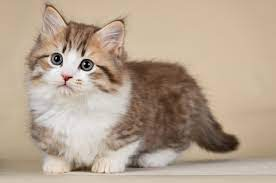

Kucing
 Kucing adalah salah satu hewan mamalia karnivora yang berasal dari keluarga Felidae. Habitat binatang lucu ini berada di darat dan umumnya berbaur dengan manusia sebagai hewan peliharaan.
Selain itu, kucing juga hidup secara liar sehingga dikenal dengan sebutan kucing hutan.
Istilah kucing pada artikel ini mengacu pada kucing kecil yang telah jinak dan dipelihara oleh manusia. Sebab istilah kucing juga bisa ditujukan untuk kucing besar seperti harimau ataupun singa
Taksonomi
Berikut ini adalah taksonomi kucing dengan nama ilmiah Felis Catus.
| Kingdom |
Filium |
Subfilium |
Kelas |
Ordo |
Famili |
Genus |
Spesies |
| Animalia |
Chordata |
Vertebrata |
Mamalia |
Karnivora |
Felidae |
Felis |
Felis Catus |
Morfologi
Tak seperti tubuh anjing yang bentuknya beragam, kucing justru memiliki struktur tubuh yang hampir sama antara jenis satu dengan lainnya. Umumnya, struktur tubuh kucing meliputi kucing lokal, ras, ataupun liar tidak memiliki perbedaan yang berarti.
Kucing adalah hewan dengan bagian tubuh spektakuler, mulai dari organ fisik bagian luar hingga bagian dalam. Setiap bagian tubuh tersebut tertata pada tempatnya dengan fungsi luar biasa. Setiap jenis kucing mempunyai bentuk, warna bulu, dan karakteristik yang khas. Bahkan setiap jenisnya memiliki wajah unik, mulai kucing berwajah datar hingga bulat.
Ada juga kucing dengan telinga menunjuk ke atas dan ada pula yang terlipat dengan berbagai ukuran. Panjang bulunya pun ada yang panjang, pendek, keriting, bahkan tidak berbulu.
Kucing memiliki mata yang dilengkapi selaput pelangi atau iris berbentuk celah. Uniknya, iris mata kucing mampu menyempit dan melebar sesuai kondisi lingkungannya. Ketika iris tersebut menyerap banyak cahaya yang biasanya diperoleh dari sinar matahari ataupun lampu, maka iris mata tersebut akan mengecil dan berbentuk melengkung kerucut.
Begitupun sebaliknya, apabila iris mata kucing menyerap sedikit cahaya yang biasanya terjadi di malam hari atau ketika kucing berada di ruangan gelap, maka iris kucing akan melebar dan berbentuk bulat.Sedangkan untuk bergerak, kucing memiliki dua pasang kaki yang terdiri dari kaki depan dan belakang. Ukuran kaki tersebut bisa pendek dan panjang tergantung spesiesnya.
Umumnya, kaki depan kucing dilengkapi dengan lima jari dan kaki belakang memiliki empat jari. Sedangkan kucing yang terlahir dengan jari berjumlah 6-7 pada kaki depan ataupun kaki belakangnya disebut sebagai polidaktil. Sementara untuk menjaga keseimbangan tubuhnya, terutama saat melompat ataupun berlari, tubuh kucing dilengkapi dengan ekor. Setiap jenis kucing memiliki bentuk ekor yang berbeda-beda, ada yang pendek, panjang, mengembang, atau tidak berekor sama sekali.
Kucing dikenal dengan susunan tulang yang cukup banyak dan berukuran kecil. Ada sekitar 244 tulang dalam tubuh kucing tergantung pada panjang pendeknya ekor kucing. Jumlah tersebut sekitar 38 lebih banyak daripada jumlah tulang manusia. Uniknya, tulang kucing sifatnya sangat fleksibel dengan 30 ruas tulang belakang yang membuatnya bisa bergerak dengan luar biasa. Pada dasarnya, tubuh kucing terbagi menjadi dua tipe yang cukup ekstrim, yaitu cobby dan svelte. Kucing yang memiliki tubuh dengan tipe cobby atau pendek dan bulat biasanya berkaki pendek, bahu lebar, dan kepala bundar seperti kucing Persia dan exotic berbulu pendek.
Sedangkan untuk tipe svelte atau bertubuh panjang dan langsing cenderung berotot, bertulang kecil, dan kepala tirus seperti kucing Siamese dan Balinese.
Secara lebih rinci, tipe tubuh kucing terbagi menjadi enam kategori berbeda, antara lain:
1. Oriental
Kucing dengan tipe tubuh oriental mempunyai tubuh lebih langsing, kepala panjang dan agak menyerupai bentuk segitiga, mata berbentuk seperti kacang almond, dan telinga besar. Sementara hidung, ekor, dan kakinya terlihat panjang. Contoh kucing oriental adalah jenis shorthair dan Balinese.
2. Foreign
Tipe selanjutnya adalah foreign yang bertubuh langsing, meski tidak selangsing tipe oriental. Perawakannya atletis, dengan telinga besar, mata berbentuk almond, ekor dan kakinya panjang. Beberapa kucing dengan tipe foreign adalah kucing Anggora Turki dan Somalia
3. Semi-foreign
Seperti halnya kucing foreign, ciri kucing yang termasuk dalam kategori semi-foreign ini sedikit lebih ramping namun dengan tubuh lebih besar. Contohnya adalah kucing Mesir dan Havana Brown.
4. Cobby
Kucing dengan tipe cobby memiliki tubuh pendek dan berotot. Mata dan kepalanya bulat, telinga kecil, hidung pesek, serta ekornya pendek. Beberapa jenis kucing cobby ialah Persia, Manx, dan Himalaya.
5. Semi-cobby
Sama dengan kucing cobby, kucing yang tergolong semi-cobby mempunyai tubuh dan kepala bulat lebar disertai kaki pendek. Contoh jenis cobby adalah American Shorthair dan British Shorthair.
6. Substansial
Kucing substansial lebih mudah dikenali karena bertubuh besar, kekar, tapi tidak membulat. Contohnya adalah kucing Maine Coon, Bengal, dan Birman.